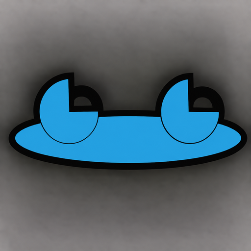

Android · APK download listed
Frog Construction Toolkit
One app for the jobsite—from the first measurement through material takeoffs, project records, and the final checklist. Built around the work, not around a maze of calculators.
View APK download & installation ↓Start where the work is.
The goal is straightforward: a contractor should be able to show up at a job with this one app and work through the project in the order the job actually happens. Open a job, choose the part you are working on, enter the measurements, calculate what is needed, and keep the results with the work. No need to be a tech expert to find the next step.
- Jobs that stay organizedGroup walls, floors, roofs, concrete pours, and other work into named projects. Keep the details for each part of a job together rather than scattered across separate calculators.
- Planned versus measuredKeep the dimensions from the plan separate from the measurements taken on site. What is on paper and what is in front of you are not always the same thing.
- Shapes that fit real buildingsPlan for irregular walls and surfaces, measured sections, and more than perfect rectangles. Older houses and oddball construction deserve tools that work with reality.
- Concrete and material takeoffsWork toward practical quantity estimates for pours, footings, roofing, siding, flooring, drywall, paint, bulk materials, and more, with assumptions and waste visible where appropriate.
- Framing and lumber referenceMeasurement conversions, framing layouts, lumber quantities, and informational span or load reference are part of the toolkit's scope. Structural decisions still require the right professional and code checks.
- Measurements that travel with the jobReuse dimensions and calculated quantities in the relevant project worksheets instead of typing the same information into disconnected tools over and over.
- Records, materials, and checklistsKeep job notes, photos, material quantities, inspection records, and task lists alongside the project, with useful job summaries for sharing or printing.
- Materials, not moneyFocus on what the job needs: lengths, areas, volumes, counts, and quantities. This is not a pricing, quoting, budgeting, or cost-estimating app.
For the walls that didn't read the blueprints.
A new build can follow the drawing. A remodel may have a wall that leans, a corner that isn't square, or measurements that disagree with the original plan. Frog Construction Toolkit is being developed with both jobs in mind: standard construction and the strange, stubborn details that show up in real buildings.
Direct Android download
Get Frog Construction Toolkit
Free, always. No ads, subscriptions, or paid unlocks.
Only public releases published by Frogdadday appear here.
Installing an APK on Android
- Once available, download the APK on your Android phone.
- Open the file. Android may ask permission to install apps from your browser or file manager.
- Review system warnings; proceed only when you trust the source. Turn off the extra installation permission afterward.
Website APKs do not receive Google Play automatic updates. Updating an installed app requires a compatible Android package and signing certificate.
This page checks whether a public APK exists; it does not independently verify the file's safety or signing certificate.
Designed for use—not decoration.
Easy-to-follow steps, clear labels, and useful results matter more than flashy screens. This is a work in progress, and the tools described here are the development direction—not a claim that every feature is finished or validated. Check the download section for current public APK availability.
Free. Simple. Respectful.
No ads, subscriptions, paywalls, or paid feature unlocks. Optional support will never change what you can use. The plan is to build a practical tool you can trust—not another monthly bill.